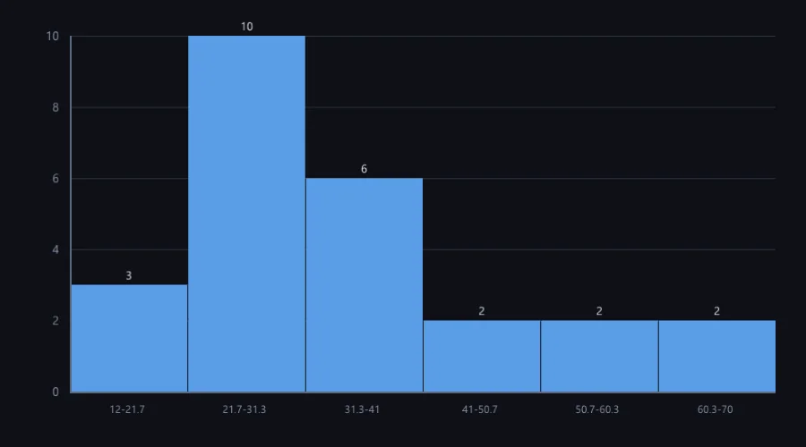

Un noyau de calcul soigneux et des graphiques testés à l'octet ; les tests non paramétriques, le rééchantillonnage et la moitié des types de graphiques sont dus.
Explorer avant de modéliser. Dans les statistiques de Softanza, une donnée est un ajustement plus un résidu, calculés de sorte qu'une seule valeur aberrante ne puisse les faire basculer, et un test ne rend jamais une p-valeur nue : une taille d'effet et une conclusion accompagnent chacun.
Le cœur de calcul est soigneux de façons mesurées plutôt que proclamées. Les sommes sont compensées, parallèles par voies, 2,5 fois plus rapides de l'être ; la variance divise par N−1 comme dans R et pandas, et ce choix est écrit une fois dans le moteur pour que chaque module s'accorde. stzDataSet répond à deux cents questions, intervalles de confiance avec leur méthode nommée, résumés à cinq nombres, tables de contingence, entropie, information mutuelle ; les tests d'hypothèse livrent t, khi-deux, ANOVA et Pearson, chacun avec sa statistique, ses degrés de liberté, sa p-valeur, sa taille d'effet et une phrase.
Les graphiques ont une discipline que leurs pairs n'ont pas : chaque moteur de rendu est vérifié octet par octet contre une vérité capturée, 107 assertions de parité, et chaque graphique a trois sorties, un dessin en terminal depuis le moteur, du SVG sans périphérique, du PNG sur le GPU, qui partagent le sens mais non la mise en page, puisque cellules de caractères et pixels diffèrent. L'étage d'exploration de Tukey est son propre contrat : le résumé dit en mots quelle convention il a suivie, charnières ou quartiles, parce que la mesure a montré qu'elles diffèrent ; une table polie par les médianes devient des verdicts sur lesquels un programme peut s'appuyer ; et un récit sur des données ne calcule rien, chaque nombre de sa prose étant lu dans l'ajustement, avec une vérification qui refuse tout nombre sans source.
oT = StzTukeySummaryQ([ 2, 4, 4, 5, 7, 9, 12, 25 ])
# the summary names the convention it used, in words
? StzFindFirst("fourths", oT.Why()) > 0
#--> TRUE
? StzFindFirst("quartiles", oT.Why()) > 0
#--> FALSE
exécuté dans la bibliothèque le 2026-10-20
Ce n'est pas encore R ni scipy.stats, et le Compas liste ce qu'un analyste rencontre le premier jour : pas de tests non paramétriques, pas de bootstrap, pas de boîte à moustaches, la moitié de la famille des graphiques, pas de séries temporelles au-delà d'une moyenne mobile, une régression qui s'arrête à la droite simple. Deux couloirs Strong, quatre Solid ; une fondation rigoureuse sous un catalogue à moitié rempli.

un histogramme de la famille des graphiques. rendu le 2026-10-01 à 04:00 par le script de rendu du site tools/areas.ring, exécuté dans la bibliothèque au commit 0e72e2e2c · la source(s'ouvre dans un nouvel onglet)
Où il en est
La lecture du Compas Softanza : chaque couloir du domaine noté face au meilleur de sa catégorie, d'après ce que les gardes prouvent (Read from the source on 2026-09-16). Les phrases du Compas sont en anglais, telles qu'il les a écrites.
The compute core is genuinely careful — SIMD Neumaier summation, engine hypothesis tests that never return a bare p-value (effect size and a conclusion come with every one), and a chart pipeline that is byte-tested against captured ground truth. But this is not yet scipy.stats or R: the nonparametric tests, resampling and time-series are absent, half the analyst's chart types don't render, and the exploratory (Tukey) tier is a plan with no code. A strong foundation, honestly incomplete.
The honesty line on the ratings. The chart guards are unusually literal — 107 parity assertions plus 19 deviceless SVG/PNG checks — so the rendering lane's Strong is earned. But the general test/plot/ directory (73 files) mostly only checks that a script runs, which is exactly why the parity suite was written; ratings here lean on the parity and backend guards, not on that directory.
The one-sentence position. Softanza's statistics is a careful, engine-backed compute and rendering foundation — often more rigorous per-function than its peers — sitting under a catalogue that is only half-filled. The gaps that matter are the ones an analyst hits on day one (nonparametrics, a box plot, bootstrap, the missing chart types); the strategic distance is statsmodels-grade regression and the unbuilt Tukey tier.
Hypothesis tests never return a bare p-value: effect size and a conclusion with every one
Chart renderers byte-tested against captured ground truth (107 parity assertions)
Three backends per chart: engine terminal, deviceless SVG, GPU PNG
Ce qui est dû
Nonparametric and normality tests (Mann-Whitney, Kruskal-Wallis, KS, Shapiro-Wilk)
The statistical chart family (box, violin, pie/donut, heatmap, area)
Bootstrap CI and permutation test over the existing sampler
Multiple regression, GLM and diagnostics; a real time-series lane; the unbuilt Tukey tier
Repensé depuis les premiers principes
Ce que Softanza a gardé de ce qui marche, et ce qu'elle a repensé, tel que la bibliothèque l'a écrit dans ses documents de conception et ses narrations.
La manière SoftanzaExplorer avant de modéliser : les données sont un ajustement plus un résidu, calculés pour qu'une valeur extrême ne les fausse pas, et les données indiquent elles-mêmes leur échelle de lecture.
Gardé des meilleures pratiques
Par défaut, la variance divise par N−1, comme dans R et pandas. Ce choix est écrit une seule fois dans le moteur : tous les modules répondent pareil. source(s'ouvre dans un nouvel onglet)
Les méthodes de Tukey sont reprises telles quelles : quarts, polissage par médianes, droite résistante, lisseurs. On les vérifie contre R et des exemples publiés, jamais contre leurs propres résultats. source(s'ouvre dans un nouvel onglet)
Les graphiques gardent les bons usages : graduations sur des nombres ronds (1, 2, 2,5, 5 fois une puissance de dix), une légende pour plusieurs séries, des barres d'histogramme jointives. source(s'ouvre dans un nouvel onglet)
Repensé
L'exploration ne produit ni valeur p, ni intervalle, ni prévision. L'inférence s'appelle délibérément : un motif trouvé dans les données ne passe jamais pour une hypothèse posée d'avance. source(s'ouvre dans un nouvel onglet)
Une convention ambiguë est nommée, jamais choisie en silence. Quarts de Tukey et quartiles par centiles coexistent, car la mesure a montré qu'ils diffèrent ; chaque affichage indique lequel il emploie. source(s'ouvre dans un nouvel onglet)
Un récit sur des données ne calcule rien. Chaque nombre du texte vient de l'ajustement ou d'un constat, et une vérification refuse tout chiffre sans source. source(s'ouvre dans un nouvel onglet)
Un seul modèle de graphique, plusieurs rendus. Terminal, SVG et PNG partagent le sens (valeurs, libellés, options) mais pas la mise en page, car caractères et pixels diffèrent. source(s'ouvre dans un nouvel onglet)
La manière Softanza, exécutée
Ce que Softanza fait autrement dans ce domaine, montré par du code tiré de ses narrations et de ses gardes, et exécuté pour cette page.
Un résumé résistant dit en clair quelle convention il emploie : charnières et quartiles ne se confondent jamais.
Softanza
aV = [ 2, 4, 4, 5, 7, 9, 12, 25 ]
oS = StzTukeySummaryQ(aV)
? oS.Why()
Sortie
a Tukey summary of 8 value(s) under Tukey's fourths (hinges at depth (floor((n+1)/2)+1)/2): hinges 4 | 6 | 10.5, fourth-spread 6.5, 1 outside, 0 far out
Une table ajustée par médianes devient des verdicts exploitables par un programme : le rapport dit que la table n'est pas saine, et quel résidu la rompt.
A table of 5 rows and 3 columns was fitted by median polish, which converged in 2 sweep(s). The common value is 8 and the residuals' fourth-spread, the scale every judgement below is in, is 1.
1
At parity, and numerically more careful than most — the Chan-Golub-LeVeque variance correction was measured to change no digit and deliberately omitted. A genuine strength.
02Chart rendering pipeline & fidelityStrong
In the engine
Three backends per chart — engine terminal (plot.zig), deviceless SVG, and GPU PNG — and a discipline peers lack: renderers are guarded byte-identical against captured ground truth (107 parity assertions), and 19 SVG/PNG checks run with no GPU (bars flush, one circle per point, treemap areas equal values).
Measured against
matplotlib backendsD3 renderVega render
To complete
The pipeline is ready; the catalogue on top of it is not (lane 9). SVG line rendering is a canvas kind but has no dedicated face yet.
03Hypothesis testingSolid
In the engine
hypothesis.zig ships one-sample / Welch (default) / pooled / paired t-tests, chi-square goodness-of-fit and independence, one-way ANOVA and a Pearson correlation test — each returning statistic, df, p-value, effect size (Cohen's d, Cramér's V, η²) and a plain conclusion. Better ergonomics than a bare tuple.
Measured against
scipy.statsR (t.test / aov)statsmodels
To complete
The entire nonparametric family is missing: no Mann-Whitney/Wilcoxon, Kruskal-Wallis, sign test, Kolmogorov-Smirnov or Shapiro-Wilk. That is the gap between Solid and parity.
04Multivariate & dimensionality reductionSolid
In the engine
A broad engine-backed set: pca.zig, tsne/umap, k-means (cluster.zig), kNN + approximate NN, naive Bayes, ID3 trees, logistic regression, fft.zig and a general eigen-solver — over a matmul measured at 15 GFLOP/s.
Measured against
scikit-learnR (prcomp / kmeans)scipy.linalg
To complete
Depth is shallower than scikit-learn and the faces live outside base/stats (in cluster / neural) — rated here as the exploratory-multivariate lane, not the full ML story.
05Analytical dataset & wranglingSolid
In the engine
stzDataSet (211 methods): confidence intervals with a reported method, box-plot five-number stats, contingency tables, frequency, entropy/diversity, mutual information, similarity, normalize/standardize, plus an insights / rules / plans engine. stzDataWrangler handles cleaning, missing-value strategies and validation.
Measured against
pandasR data.frame / dplyrPolars
To complete
The wrangler is pure Haro (no engine backing); columnar scale, join breadth and groupby depth are the Tables & data group's page, not this analytical surface.
06Optimization & solversSolid
In the engine
Real LP/MIP: stzLinearSolver builds a Big-M tableau and pivots in the engine (simplex.zig), with a branch-and-bound floor (optim.zig), a stochastic/robust solver, and root/quadrature primitives (bisection, Newton, Simpson) plus LU/Gauss-Jordan matrix algebra.
Measured against
scipy.optimize / linprogGLPKR optim
To complete
The deep optimization story — nonlinear/convex solvers, autodiff-driven minimization — is the Numeric & optimization group's page; here it is a solid embedded lane.
07Distribution functionsPartial
In the engine
special.zig ships correct CDF and quantile (ppf) for the four testing distributions — Normal, Student-t, Chi-square, F — on top of erf, log-gamma, incomplete gamma and incomplete beta, with a criticalValue(level, df) helper.
Measured against
scipy.stats (~100 dists)R distributionsBoost.Math
To complete
Only four continuous families, and no discrete distributions (binomial, Poisson) — next to scipy's ~100. No distribution object with .pdf/.sample(); sampling lives in a separate random engine.
08Correlation & regressionPartial
In the engine
Pearson & Spearman correlation, covariance and simple linear regression are engine-backed, with frame-level regression, correlation matrix and multi-column describe (frame.zig). Partial correlation and mutual information ship Haro-side.
Measured against
statsmodels (OLS/GLM/logit)R lm / glmscikit-learn
To complete
Multiple regression, GLM and logistic-as-a-stats-face with residual diagnostics — the statsmodels core — are missing (logistic exists only in the ML lane). No ridge/lasso.
09Charts & data-viz cataloguePartial
In the engine
Renders today: vertical / horizontal / multi-series bar, histogram, scatter, and treemap — each across all three backends. Line is a canvas kind without a face.
Measured against
matplotlibggplot2D3 / Observable PlotVega-Lite
To complete
The statistical types an analyst reaches for are all missing: box, violin, pie/donut, heatmap, area/stacked, candlestick, radar, contour. Since the pipeline (lane 2) is ready, this is the highest-visibility win.
10Resampling & Monte-Carlo inferenceEmerging
In the engine
The substrate exists — random.zig ships seeded Gaussian/exponential/weighted/bulk sampling and shuffles — but no inference is built on it.
Measured against
scipy.stats.bootstrapR bootscikit-learn resample
To complete
No bootstrap confidence intervals, no permutation test, no jackknife. A small inference layer over the sampling engine would move this quickly — the raw material is already engine-backed.
11Time-seriesEmerging
In the engine
Moving average is an engine primitive (stz_stats_moving_average); trend / simple-series analysis is Haro-side. That is essentially the whole surface.
Measured against
statsmodels.tsaR (forecast / ts)Prophet
To complete
No autocorrelation, seasonality, exponential smoothing or ARIMA. Tukey's resistant smoothers (4253H, twicing) and change-point detection are planned but unbuilt (lane 12).
12Exploratory data analysis (Tukey tier)Emerging
In the engine
A detailed plan of record (SOFTANZA_TUKEY_PLAN.md, TK0–TK6) written "before any code": a resistant Data = Fit + Residual contract, median polish, measured re-expression. No code has shipped — no eda.zig, no faces, no test/tukey/.
Measured against
R (Tukey EDA, vcd)seabornstatsmodels graphics
To complete
Everything: stzBoxPlot (notched, the five numbers already compute), stem-and-leaf, residual and coded-table displays, letter-value summaries, resistant smoothers. The tier's first action is still TK0.
Ce qui est dû, dans l'ordre du rendement
Les manques, classés par ce qu'ils rapportent et non par leur taille ; la valeur est l'effet sur la portée de la bibliothèque, l'effort une lecture d'ingénieur.
Tier A — foundational, unblocks whole lanes
Nonparametric & normality tests
Mann-Whitney/Wilcoxon, Kruskal-Wallis, sign test, Kolmogorov-Smirnov and Shapiro-Wilk in hypothesis.zig. This is the single line between the testing lane's Solid and category parity with scipy/R — the parametric core and its reporting are already there to extend.
Valeur · élevéeEffort · moyen
Complete the statistical chart family
Box, violin, pie/donut, heatmap and area — engine renderers plus stzPlotCanvas faces. The byte-tested pipeline (lane 2) is ready and waiting; this closes the weakest visible lane against the most crowded field.
Valeur · élevéeEffort · moyen
Tier B — cheap and high-leverage (the substrate already ships)
Bootstrap CI + permutation test
A thin inference layer over the existing random.zig sampler. The hard part — fast seeded bulk sampling — is already engine-backed; what is missing is the resample-and-summarise loop on top.
Valeur · élevéeEffort · faible
The box plot specifically
BoxPlotStats() already computes the five numbers — the Tukey plan calls it "the promise at stzDataSet.ring:2423." Only the render is missing; a notched box with mild/extreme outliers is a short face over data that exists.
Valeur · moyenneEffort · faible
Discrete distributions + a distribution object
Binomial and Poisson (pmf/cdf/quantile) reusing the incomplete-gamma/beta machinery in special.zig, and a small distribution object exposing .pdf/.cdf/.sample() uniformly.
Valeur · moyenneEffort · moyen
Tier C — strategic, larger
Multiple regression, GLM & diagnostics
OLS with multiple predictors, logistic regression as a stats face, and residual/leverage diagnostics — the statsmodels core. High value, and the matrix algebra it needs (matrix.zig LU / inverse) already ships.
Valeur · élevéeEffort · élevé
A real time-series lane
Autocorrelation, exponential smoothing, seasonality and ARIMA. Today the surface is a moving average and a trend line; forecasting is entirely open.
Valeur · moyenneEffort · élevé
Build the Tukey EDA tier
Execute TK0–TK6: the resistant Data = Fit + Residual contract, median polish, stem-and-leaf, residual and coded-table displays, and resistant smoothers. A fully-specified program with zero code so far.
Valeur · stratégiqueEffort · élevé
La conception, telle que la bibliothèque l'a écrite (1)
Les documents de conception de ce domaine, lus dans le dépôt au commit 4a184e6f0 : ce que chacun est, son plan, et le lien vers le texte entier.
SOFTANZA TUKEY PLAN — the exploration tier (TK0–TK6)
1 309 lignes · 20 sections · écrit le 2026-08-16, revu le 2026-09-26
Plan de référence du niveau d'exploration (TK0 à TK6), remplaçant trois notes anciennes jamais exécutées : statistiques résistantes et affichages en Zig derrière un objet de contrat, ré-expression mesurée non estimée à l'œil, verdicts dans la forme maison ; TK0 à TK5 livrés, mémoire de TK6 refusée.
Le plan
HOW TO USE THIS DOCUMENT (session bootstrap — read this first)
0. THE SURVEY (taken 2026-08-16)
1. STRATEGIC PROPOSAL
2. DESIGN — the settled decisions
3. ENGINE DESIGN
4. THE HARO SURFACE (illustrative — not yet run)
5. IMPLEMENTATION PLAN — phases and kill criteria
6. VERIFICATION METHOD — where the expectations come from